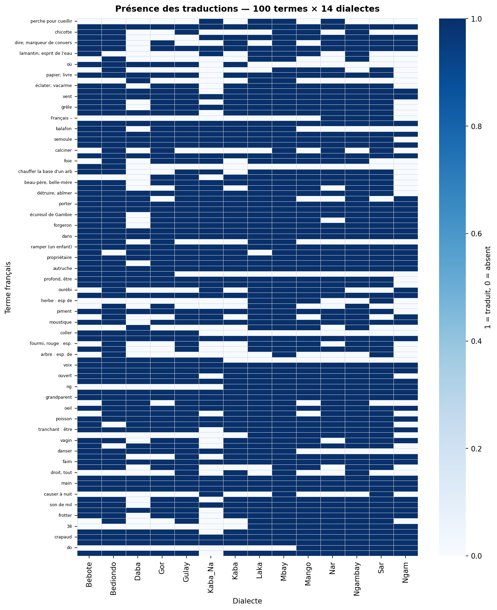
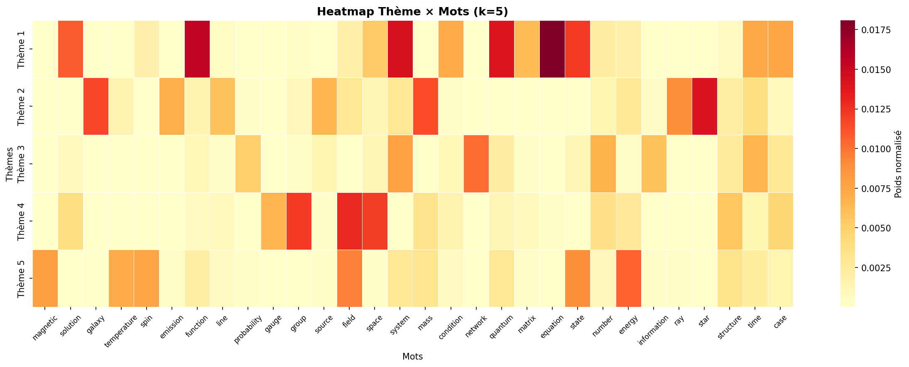

03 · NLP & Text Mining
Lexique multilingue
D'un PDF de 78 pages à des données exploitables : 1 077 termes français et leurs traductions dans 14 dialectes Sara, puis trois approches de machine learning pour les faire parler.
- Rôle
- Autrice · projet de fin de semestre, Licence IA & Big Data (EPL)
- Corpus
- SaraLanguagesLexicon.pdf · 78 pages, puis 14 794 résumés arXiv (partie C)
- Construit avec
Python
- PyMuPDF
- Regex
- pandas
- scikit-learn
- LDA
- Livrables
- CSV wide / long / 14 paires · 13 figures

01 Le problème
Des langues parlées par des millions de personnes, mais un lexique coincé dans un PDF : sans données structurées, aucun modèle ne peut apprendre.
Les langues Sara, parlées en Afrique centrale, sont ce qu'on appelle des langues peu dotées : très peu de ressources numériques exploitables. Le Sara Languages Lexicon existe, mais sous forme d'un PDF de 78 pages en deux colonnes, avec une police d'encodage ancienne qui affiche des caractères faux. Impossible de l'utiliser tel quel pour du machine learning.
Le projet suit trois étapes : extraire le lexique du PDF vers des CSV propres (partie A), explorer statistiquement la couverture des dialectes (partie B), puis modéliser avec trois approches complémentaires — topic modeling, classification, clustering — appliquées à un corpus personnel (partie C).
02 Partie A · Extraire
78 pages en deux colonnes, une police qui ment sur les caractères : l'extraction est un travail de précision, pas un copier-coller.
La classe SaraExtractor ouvre le PDF avec PyMuPDF et découpe chaque page en deux colonnes verticales (get_textbox à gauche et à droite du milieu). Chaque ligne est ensuite classée : si elle contient un motif CODE= (par exemple Mb=...), c'est une traduction ; sinon, c'est un nouveau terme français.
Le point délicat, c'est la police SaraFont : elle encode les phonèmes avec de mauvais caractères. Une table d'une quarantaine de substitutions les convertit en API corrects (par exemple ô → ɔ́, Ñ → ŋ, ß → ɓ, ÷ → ɗ, Ž → ʒ). Cette correction s'applique uniquement aux traductions Sara : appliquée au français, elle transformerait un ô parfaitement valide en phonème Sara. Le français, lui, ne subit qu'une normalisation Unicode NFC et un nettoyage minimal qui préserve ses accents.
Le résultat est exporté en trois formats : sara_wide.csv (un terme par ligne, une colonne par dialecte), sara_long.csv (une paire par ligne) et un fichier par dialecte dans pairs/.
Extraction
- Pages lues
- 78
- Entrées extraites
- 1 136
- Dialectes
- 14
- Substitutions SaraFont → API
- ~40
- Fichiers générés
- wide + long + 14 paires
03 Partie B · Explorer
Tous les dialectes ne sont pas logés à la même enseigne : le mbay couvre 98 % du lexique, le ngam à peine la moitié.
Une fois nettoyées, les données parlent : 1 077 termes français uniques pour 11 307 paires de traduction. Seuls 234 termes existent dans les 14 dialectes à la fois (acheter, aller, arbre, arachide…), tandis que des mots comme chicotte ou patate douce n'ont que 2 traductions.
Autre constat : les mots Sara sont courts et ramassés (3,89 caractères en moyenne) face au français (10,81 caractères) — le français est environ 2,8 fois plus long. Cinq visualisations documentent l'exploration : volumes par dialecte, heatmap de couverture, boxplot des longueurs et nuages de mots (mbay, ngambay).
Couverture par dialecte
- Mbay
- 1 059 · 98,3 %
- Mango
- 906 · 84,1 %
- Gulay
- 899 · 83,5 %
- Ngambay
- 890 · 82,6 %
- Sar
- 888 · 82,5 %
- Laka
- 886 · 82,3 %
- Bediondo · Nar
- 846 · 78,6 %
- Bebote
- 822 · 76,3 %
- Gor
- 796 · 73,9 %
- Kaba
- 728 · 67,6 %
- Daba
- 619 · 57,5 %
- Kaba_Na
- 586 · 54,4 %
- Ngam
- 536 · 49,8 %
04 Partie C · Modéliser
Trois approches, un même corpus de 14 794 résumés scientifiques : découvrir les thèmes, classer les domaines, regrouper sans étiquettes.
Corpus personnel : 15 000 articles arXiv, réduits à 14 794 documents et 15 domaines après nettoyage. Prétraitement maison — minuscules, suppression des formules LaTeX, stopwords anglais et scientifiques, lemmatisation — puis TF-IDF (10 000 termes, uni- et bigrammes) et sac de mots.
Topic modeling · LDA
- thèmes retenus (perplexité minimale)
- k = 5
- perplexité à k = 5
- 1 979,1
- plus gros thème (physique de la matière)
- 4 996 docs
La perplexité départage k = 5, 10, 15 et 20 : elle est minimale à k = 5 et se dégrade ensuite. Les cinq thèmes sont lisibles sans connaître les labels : équations et systèmes quantiques, étoiles et galaxies, réseaux et algorithmes, théorie des groupes, énergie et champs magnétiques.

Classification supervisée
- meilleur modèle (Naive Bayes)
- 79,3 %
- F1 macro (Naive Bayes vs 0,586 logistique)
- 0,595
- erreurs sur 2 959 documents test
- 613 · 20,7 %
Naive Bayes bat de peu la régression logistique (79,3 % contre 78,8 % d'accuracy). L'analyse des erreurs est la partie la plus instructive : les confusions suivent la proximité réelle des disciplines — physics pris pour cond-mat (51 cas), math-ph pour math (42 cas). Les petites classes (nlin, math-ph) sont les principales victimes du déséquilibre.
Enfin, le clustering K-Means (LSA : 10 000 → 100 dimensions, 15,5 % de variance conservée, k = 15 comme les 15 domaines) retrouve sans supervision des regroupements cohérents : trois clusters astro-ph à plus de 94 % de pureté, un cluster trou noir (black, hole, hawking, entropy), un cluster neutrino, un cluster matière noire. Les clusters mixtes (cond-mat à 23,9 %) montrent les limites du non supervisé sur des frontières floues.
05 Et après
D'un PDF verrouillé à un lexique mesuré puis modélisé : la chaîne complète, du parsing regex au topic modeling, tient dans trois notebooks reproductibles.
Quatre pistes prolongent le travail :